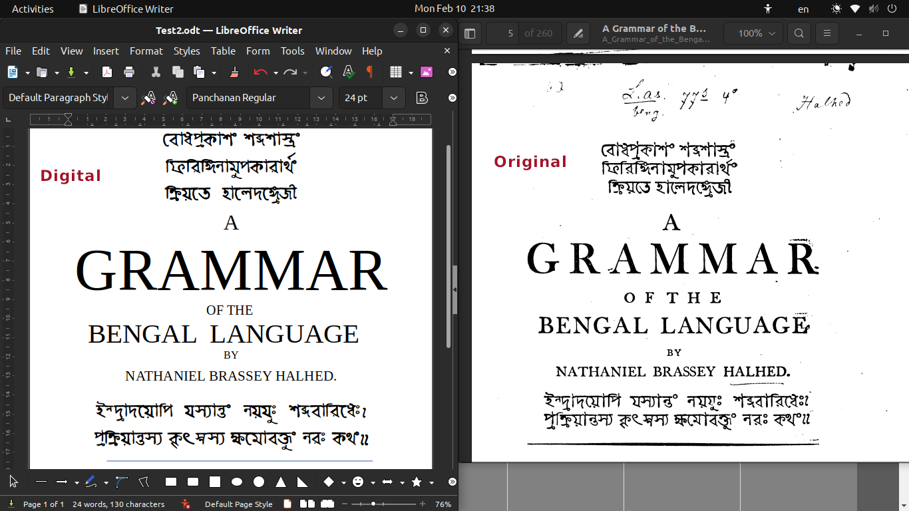

Panchanan Karmakar (Mallick) (died c. 1804) was an Indian Bengali inventor, born at Tribeni, Hooghly, Bengal Presidency, British India. He assisted Sir Charles Wilkins in creating the first Bangla typeface in 1778. It was used for printing A Grammar of Bengali Language by Nathaniel Brassey Halhed.
Later in 1799 he left East India Company Press and joined Missionary Press in Serampore, where along with Bengali he also developed type in 14 languages, including Arabic, Persian, Marathi, Telegu, Burmese and Chinese. He made the Serampore Missionary press the largest multiscript foundry in Asia in early 19th Century. He also trained the next generation of punch-cutters, pioneering the typographic legacy in India.

This project is a tribute to Panchanan Karmakar by digitalisation of world's first Bangla Typeface he helped creating.
Please visit our github page for more details.